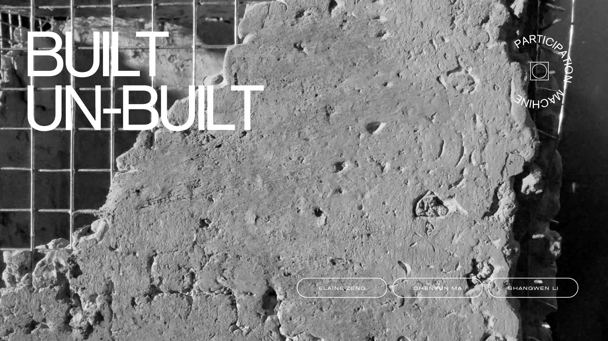

Built Un-built Installation
Concrete, metal and wire mesh register a viewer’s proximity through sound. The installation explores the tension and instability of a city caught between construction and demolition.

Concrete, metal and wire mesh register a viewer’s proximity through sound. The installation explores the tension and instability of a city caught between construction and demolition.
Project documentation will be added here.
A speculative device that makes room for daydreaming on a New York subway commute. Project documentation will be added here.
Research and process materials will be added here.
Proposal materials will be added here.
Project links and documentation will be added here.
Films, credits and project documentation will be added here.
I’m Yun Ma (fu.0). I study Design & Technology at Parsons School of Design in New York.
I started in graphic design and visual storytelling. My current work spans interactive installations, creative coding, web experiences, experimental games, and moving image.